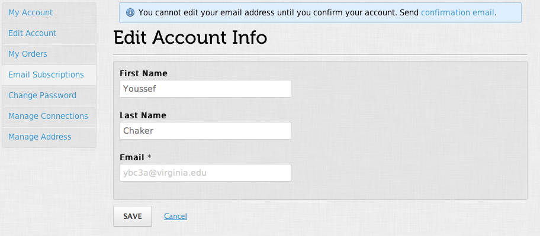

Youssef Chaker


 Follow @ychaker
Follow @ychaker
Anyone looking for an agile coach/web developer? Contact me #Lebanon #MENA #agile #development #web
— Youssef Chaker (@ychaker) February 23, 2012
best quote ever: "What's the fucking ROI of your mother?" never gets old.. cc @garyvee
— Youssef Chaker (@ychaker) February 23, 2012
As of yesterday (thx @LebaneseVoices 4 pointing this out) Im a walking billboard If u want something advertised u can give me a shirt 2 wear
— Youssef Chaker (@ychaker) February 13, 2012
University of Virginia, School of Engineering and Applied Science, Charlottesville, VA Degree: B.S. Computer Engineering, Class of 2008
Thesis: Designing and Building an Energy Responsible Data Center
Certifications: UNIX Essentials Featuring the Solaris 10 Operating System (SA-100-S10)
Programming Languages: C, C++, C#, Java, JavaScript, Python, PHP, Ruby, VHDL, x86 Assembly
Tools and Applications: Eclipse, FPGA Advantage, Mathcad, MATLAB, PSpice, Visual Studio Development
Methodologies: Agile, Scrum, Test Driven Development, Behavior Driven Development
MADISON COUNTY SCHOOLS
Consulted with Madison County Director of Information Technology on moving to a virtualized server environment to reduce server footprint and costs.
Wrote a technology road map for the County advising specific steps on how to go about the transition to a “greener” data center using virtualization technologies and “in the cloud” solutions for critical services such as email and document collaboration.
Feedback from the client: “We're kicking some serious butt with VM now - got VSphere running, shut down exchange and went to Google Apps for Education, and turned off a total of like 10 servers. I think we're down to 4 from 15 as of 18 months ago. I'm VERY happy. Getting LEAN!”
Revamped, as part of 6 person team, a 10 year old platform for science oriented press release management firm to manage handle increasing site traffic and publish to new Web 2.0 style media outlets.
- Ported legacy PHP code to the Zend MVC framework
- Implemented search functionality using the Solr search engine for over 90,000 press releases with complex business rules driving PR release visibility in search results
- Sophisticated, responsive user interface via AJAX elements
- Improved the user interface in parts of the site
- Practiced and evangelized Test Driven Development (TDD) and Agile methodologies with the Newswise in-house development team
- Wrote a Ruby script to import legacy data to a new data base
- Implemented a scanner application on a Windows Mobile 6 platform in .NET to scan event tickets at venues
- Integrated reporting functionality to the scanner application
- Developed communication process between scanner and server to ensure updated information
- Reengineered the TicketFly user accounts application using Grails to serve a central independent OAuth service provider to other TicketFly applications
- Wrote a WordPress plugin to serve as a OAuth consumer of the TicketFly API
- Integrated the Facebook Graph API functionality into the user accounts application

WORKWORLDWEB
Developed a web based version of the Virginia Commonwealth University WorkWorld desktop application using Ruby on Rails. Implemented an easy and flexible admin interface that allows the VCU team to create and manage questions and question groups to be displayed to users according to specific display rules. Developed a workflow engine similar to a state machine for questions and their groups with a behavior dependent on the user's input and previously saved answers. Over 200 RSpec and Cucumber tests verify the workflow engine.
Administrators can embed Ruby code while creating questions in order to setup context specific display rules that rely on users' answers, as well as provide numerical results after completion of the workflow.
WorkWorld was an Agile project using Scrum for scope management and leveraging Test Driven Development to ensure code quality.
CTO
Virginia, Marrakech, Beirut, London, Paris, Santiago (Start-Up Chile)
Ruby 1.9.2 -> Ruby 1.9.3
TDD, BDD (RSpec, Cucumber), Heroku, Linode, Janrain, Postmark, New Relic, Woopra, KISSmetrics, 37signals suite